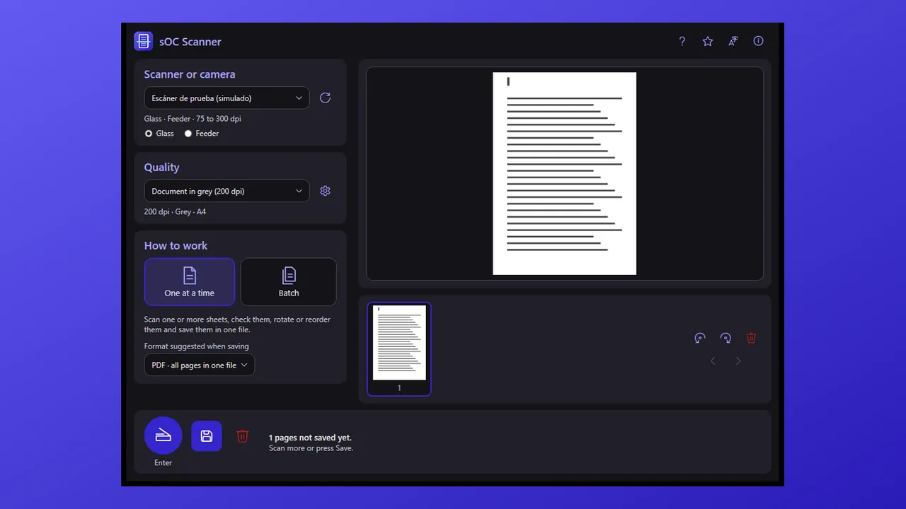

Soporte · sOC Scanner
Cómo funciona sOC Scanner, pantalla a pantalla, y qué hace cada opción.
En esta guía



sOCScanner.exe desde la página de versiones de GitHub (https://github.com/donki/Scanner/releases) y ábrelo con doble clic: no hay que instalar nada. Si Windows avisa de que el editor es desconocido, pulsa «Más información» y «Ejecutar de todas formas».Requisitos: Windows 10 (versión 2004) o posterior, o Windows 11, de 64 bits. El escáner tiene que estar añadido en Windows (Impresoras y escáneres) con el controlador del fabricante.
La primera vez se abre la «Guía de configuración», paso a paso (Atrás / Siguiente abajo): el escáner o la cámara en Windows (con un botón a Impresoras y escáneres), el permiso de la cámara (solo si vas a usar una), la calidad y la carpeta y los nombres de la serie. Cada paso dice si está hecho, pendiente u opcional. Se vuelve a abrir cuando quieras con el botón de ayuda (?).
El engranaje junto a la calidad abre un diálogo: resolución (solo las que admite el dispositivo elegido), color, gris o blanco y negro, tamaño de la hoja (A4, Carta, A5 o todo el cristal), brillo, contraste y calidad JPEG (también la de las fotos dentro del PDF). Abajo se ven los megapíxeles por hoja y lo que ocupa antes de comprimir.
Elige la carpeta, el formato y el nombre: lo que va antes y después del número, el número siguiente y sus cifras. Cada hoja se guarda sola nada más escanearla y se ve el nombre de la próxima. Si un número ya existe, se salta al siguiente libre: nunca se pisa un fichero.
Añádelo en Windows (Configuración › Bluetooth y dispositivos › Impresoras y escáneres) con el controlador del fabricante, enciéndelo y pulsa el botón de recargar. La guía de configuración tiene un botón que abre esa página.
Una por USB y otra por red. Las dos sirven; por USB suele dar más resolución.
Solo salen las resoluciones que admite el dispositivo elegido. Si pides una calidad que no llega, se ajusta a la más alta que tiene y te lo dice.
Windows tiene que dejar que las aplicaciones de escritorio usen la cámara: Configuración › Privacidad y seguridad › Cámara › «Permitir que las aplicaciones de escritorio accedan a la cámara». La guía lo abre.
Una hoja de texto en blanco y negro, unas decenas de KB en PDF. El diálogo de calidad enseña los megapíxeles y los MB antes de escanear.
Abre una incidencia en GitHub contando qué te pasa y con qué versión y dispositivo.